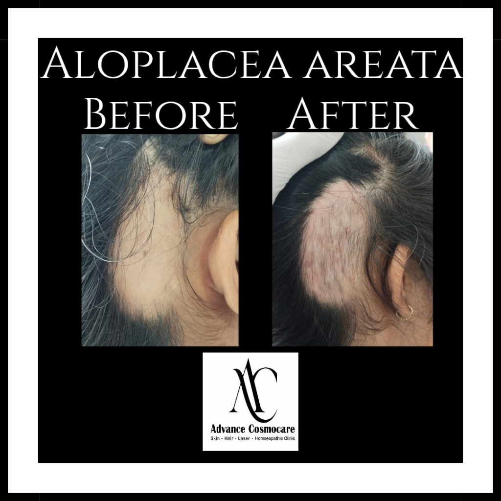

Clinical Hair Restoration
Our doctor-led hair restoration treatments are designed to arrest active hair fall, restore hair density, and stimulate healthy regrowth using advanced clinical therapies.
Under the guidance of Dr. Ankita Patel, we combine state-of-the-art Growth Factor Concentrate (GFC) and Platelet-Rich Plasma (PRP) therapies with personalized medical plans and scalp care routines to achieve visible, natural results.
Book Your Consultation Today
Common Hair Concerns & Treatment Process
Learn about the common hair concerns we target and the clinical path we follow to restore volume and scalp health.
Common Hair Concerns We Treat
Excessive Hair Fall
Arrests active hair fall triggered by stress, seasonal changes, or nutritional deficiencies.
Thinning Hair
Improves hair density and thickness of individual hair shafts to restore volume.
Male & Female Pattern Hair Loss
Addresses androgenetic alopecia using targeted medical and growth factor therapies.
Receding Hairline
Rejuvenates dormant hair follicles along the temples and hairline to encourage growth.
Alopecia Areata
Manages sudden, patchy hair loss with specialized, doctor-supervised treatment protocols.
Weak or Slow Hair Growth
Boosts blood circulation and provides nutritional support to stimulate healthy root growth.
How Our Treatment Works
Hair & Scalp Assessment
We examine your scalp, identify the cause of hair loss, and understand your concerns.
Customized Treatment Plan
Based on your condition, your treatment may include PRP, GFC, medications, scalp therapies, nutritional support, and a personalized hair care routine.
Regular Follow-up
We monitor your progress and adjust your treatment plan to achieve the best possible results.
Frequently Asked Questions
Everything you need to know about the treatment process, comfort, and efficacy.